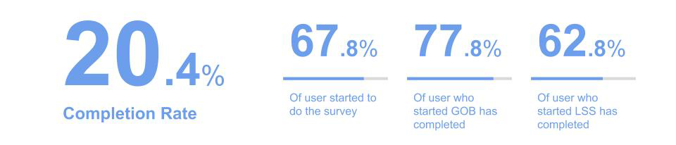
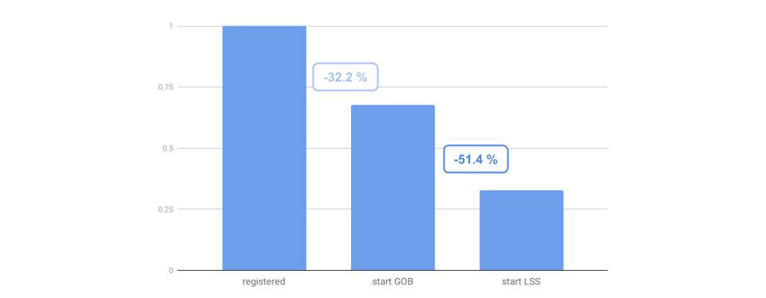
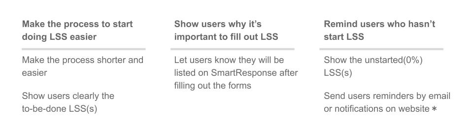
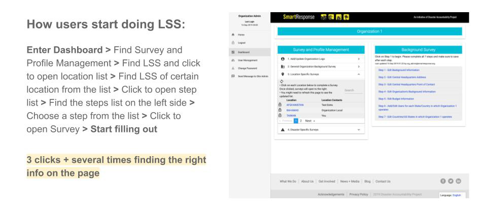
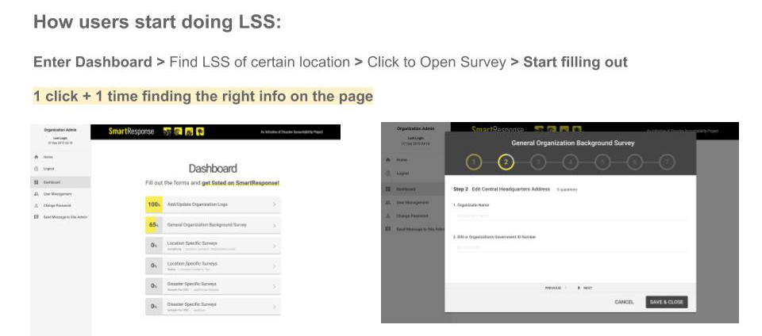
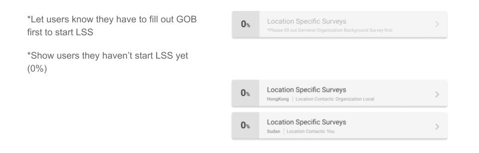
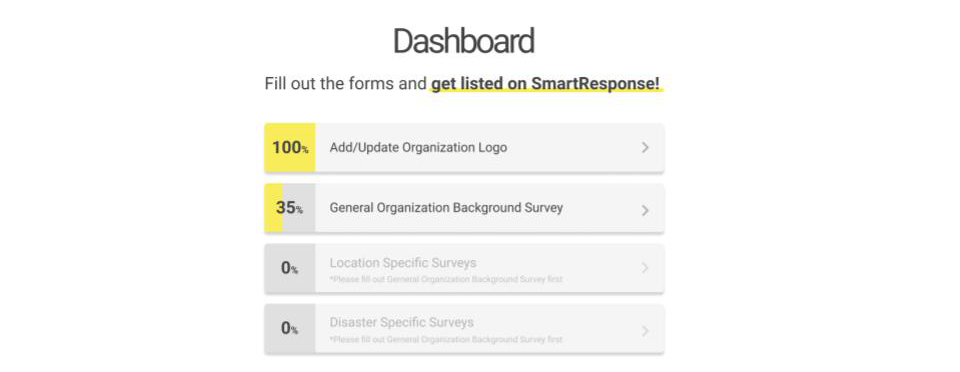

Data Exploration / UI Design Proposal
The completion rate of the survey on our dashboard is low, so we wanted to redesign the interface to help improve the completion rate. However, we don't know what design can really help the improvement. Therefore we do some simple user data exploration to see how user do our survey, and find out what we should do first in design to increase the completion rate.
The overall completion rate is only 20.4%. 67.8%of users started to do the survey, we can see at least most of them know they should start it. Among them, 77.8% who started GOB(General Background Survey) has completed, and 62.8% who started LSS(Local Specific Survey) has completed. We can see if user started the survey, most of them did complete. The progress from start to complete is not a very big problem to users.
We all know users have to start GOB first. Most users (67.8%) started GOB, but more than half of those who has started GOB didn’t start LSS. To improve the overall completion rate, how to make user start doing LSS is probably a priority task to solve.
From the information above, we can see that to improve completion rate, the first thing to do should be making users start doing LSS. We have to figure out how to make users start doing LSS by interface design. And since we do it for a nonprofit organization, we should try to minimize the efforts and maximize the benefits when doing design.
Make the process shorter and easier
Before
After
Show users clearly the to-be-done /unstartedLSS(s)
Let users know they will be listed on our platform after filling out the forms
